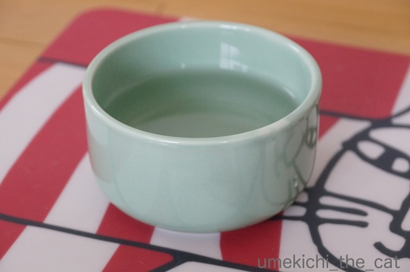

やっぱりじゃらしが好き！ [梅吉]


梅吉さんが真剣に見つめていたのは

このグリーンのねこじゃらし。
梅吉を我が家に迎える時に買った「いわゆる普通のねこじゃらし」が壊れてしまったので
「エノコログサ風」なこのじゃらしを買ってみました。
竿の部分がワイヤーなのでびょんびょんと反動がつくのが面白いのかな。


夢中で遊んでおります！

おしっぽぴーーーーーんっ！！
きまぐれなお猫様だからその時々でお気に入りは変わりますが
やっぱりじゃらしへの食いつきは抜群ですね＾＾
このじゃらし、じゃらし部分に針金が仕込んであるので折れを繰り返しているうちに
ポッキリいきそうでもありますが・・・・・
暑くなってからささみの茹で汁「ささみスープ」を時々振舞っているのですが

とうとうこれ、ヘルスウォーターボールも買っちゃいました。
壱猫さんのと迷いましたがお水が美味しくなるのなら、とこちらに。
ささみスープも良いけれどちゃんとお水も飲んでもらわなきゃ。
底の深いのが面白いのか手を突っ込んだりしながら飲んでますわww

カフェオレ色の梅吉

梅吉 2023年8月10日 永眠


梅吉と出会った譲渡会

犬猫の理由なき殺処分ゼロ
妄想広告
UMEKICHI 光

爆発的に早い！
時々攻撃的！
Thanks to Mr.Boss365
爆発的に早い！
時々攻撃的！
Thanks to Mr.Boss365

うちもささみのゆで汁を水分補給にときどきやってます。水をナノが飲まないんだよな~
ちなみにきなこが頭で押して動かしたのはヘルスウォーターLサイズです(笑)
by palpal (2017-07-24 15:21)
戯れている姿はニャンさんらしくて可愛いね。
もしかして、水をすくって飲みますか？
見てみたいなぁ〜
by kiki (2017-07-24 15:54)
梅吉さん、めちゃくちゃ真剣な表情ですね(^O^)
このじゃらし、うちも最初は人気だったのですが自分で動かさないと
動かないことが分かってからはあまり遊んでくれなくなりました^^;
今は竿の先におもちゃがついてるじゃらしがお気に入りです(^-^)
水分補給、うちはピュアクリスタルとマウンテンとヘルスウォーターを
取り揃えてますが、一番人気は洗面台でかみさんの手から飲む水ですｗ
by ニッキー (2017-07-24 15:56)
梅吉さんの「きろん」いいな～♪
エノコログザ風猫じゃらし、こてつも子猫の頃よく遊んでいました。
がしかし、基本的に下僕が振り回さないと遊ばない猫なので、短い柄のじゃらしでは動かせる範囲が狭くて物足りないようで、今はあまり興味を示しません・・・。
ささみのゆで汁、さっそくやってみたのですが・・・チラッと匂いを嗅いだだけで逃げてしまいました(-_-メ)
ヘルスウォーターボウル、良さそうですね(*^▽^*)
by ゆきち (2017-07-24 16:05)
短い猫じゃらしは猫には人気でも、振り回す私が疲労困憊するので、あまり使いません(根性なしなの) ヘルスウォーターボールは、マイキーのマットに乗っていなければ、人間の抹茶椀みたい。
by zombiekong (2017-07-24 16:20)
あ〜なるほど。水分補給のために茹で汁…φ(.. )
王子はひとりっ子で比較対象がないので、あくまでも印象ですが
わりと飲む方かなぁ…。
でもたくさん飲んだ方が腎臓にはイイですよね。
色々試してみなくては！
梅吉くん、ジーッと見る時、お目々の形が変わってる〜！
ちょっと困った顔に見えてカワイイ(*^^*)
by も〜 (2017-07-24 19:24)
梅吉さん食いついていますね～猫はじゃらしが大好きですね～
by みぃにゃん (2017-07-24 19:44)
梅吉さん♪
真剣なおめめで夢中ですね！
遊んでくれると嬉しいですね(^^♪
ヘルスウォーターボウル！！
買おうか迷っていたものです！！
ですが流水好きなので
とりあえずピュアクリスタルを買っちゃいましたが♪
by きぃ (2017-07-24 20:07)
じゃらしで真剣に遊んでいますね(^^)
by ma2ma2 (2017-07-24 21:41)
梅吉さん、目が真剣ですね～♪
うちのは、座布団の下から猫じゃらしを出し入れすると
ものすごく喜びます。・・・最近やっていませんが。^^;
by yes_hama (2017-07-24 21:42)
梅吉さんの愛嬌のある表情がいいです(^^♪
やっぱり「猫じゃらし」が一番遊んでくれるんでしょうね。
壊れないことを祈っています(^^♪
by riverwalk (2017-07-24 22:15)
ササミのゆで汁を冷ましてあげるのね。やってみよ～(^-^)
家は壱猫。お水はピュアクリスタルの残骸に入れて・・・ｗ
ヘルスウォーターボールはお水がまろやかになるって！
おいしそうだね。
そうそう！ワイヤーの猫じゃらしは予測不能な動きをするのよね。
私もさっき遊んであげていたら、興奮したタラの爪が小指に刺さって
血がでたところ・・・小さな穴なのに痛い・・・( ；∀；)
ちぃさんも、気をつけてね。
by emi (2017-07-24 22:27)
先生！ちょっと、立ちすぎでは？
ご苦労様です。＾＾
by KENT0mg (2017-07-24 23:09)
昨日は日差しが無くて気持ち涼しかったので
部屋にカナブンを放して走ってもらいました（爆）
by ぽちの輔 (2017-07-25 06:56)
梅吉くん、楽しそうですね～^^
うちも遊んであげなくちゃと思うんだけど
人間がグータラしてます^^;
今のところ２ニャンで追いかけっこしてるから、いっかー(笑)
ヘルスウォーターボール、うちも使ってます^^
キッチンに置いてるわ♪
by リュカ (2017-07-25 10:06)
梅吉さんの真剣なまなざし・・・凛々しいわ♡
にゃんこってホント身体柔らかいですね～
引越しの時忙しかったので、カリカリをメインにしていたのですが
おしっこの量がウェット＋手作りご飯の時の半分以下に減ったので
今はカリカリとウェット＋手作りご飯を半々くらいにしてます。
ウェット＋手作りご飯の時にはこれでもかというくらい
水分を足してスープ状にして水分補給させています。
にゃんこは余り自分から水を飲まないので気を使いますよね。
by Moon (2017-07-25 11:10)
瞳が輝いてるー☆シッポも嬉しそうね！
我が家にも同じおもちゃがありますが、今はもう棒だけ・・・。
by Ginger (2017-07-25 13:10)
梅吉さん、真剣なおめめが超かわいい！
困ってるみたいで～＾＾
柔軟な動きもカッコいい～＾＾
じゃらし系は人気あるんですね～♪
ささみの茹で汁！なるほど＾＾
by sana (2017-07-25 22:43)
palpalさん＞きなこちゃんが頭で押していたのはLサイズ！？
うちはSを買ったのですがそれでも結構重量あるよー！
う〜ん・・・・・きなこちゃん、執念ですな(⌒_⌒;
kikiさん＞すくう、まではいかないのですが濡れた手をじ〜〜〜っとみて
ペロペロ舐めてますww
今度動画に挑戦して見ますね〜＾＾
ニッキーさん＞ニッキー家のにゃんずさんは
じゃらしを振ってあげないとダメなのですね。
梅吉は最初だけ動かせばOKであとは一人で盛り上がってくれることが多いです(≧艸≦)
ゴッドマザー様はその人望だけではなく
手からもにゃんずさんを引き寄せる何かか出ているのですね！！
そういうひとにわたしもなりたい・・・・・
ゆきちさん＞こてつくんはささみの茹で汁に興味なしですか。残念！
「身なら食べてもいいにゃ！」の気持ちでしょうか(^▽^;)
梅吉はごくごく飲みすぎて胃液が薄まってしまうんじゃないかと
心配になる程なので与えすぎない様に気をつけていますww
猫用ミルクも買ってみたのですがこちらはまだ飲ませていません。
よろこぶかなー？こてつくんはどうかなー？
zombiekongさん＞ヘルスウォーターボールは本当に抹茶碗みたいですよね＾＾
届いた時に一目見たおっとが「和、の雰囲気だな」と言ってましたーww
短いじゃらしは私のお膝に乗りながら遊ぶのが一番気に入っている遊び方の様です。
甘えん坊ですよー(≧▽≦)
も〜さん＞そうそう！オス猫の水分補給は腎臓系の病気の予防にも
なるかと思って気をつけています。
先代猫がそれで大変な苦労をしたので・・・・・
猫の目はアーモンド型がほとんどだと思うのですが
梅吉の上まぶたって直線気味なんですよ〜。それで困り気味の表情に。
チャームポイントでもあります(^_－)☆
みぃにゃんさん＞なんだかんだで古典的なおもちゃに食いつく梅吉です(^_－)☆
きぃさん＞Leaちゃんみたいに流水好きならピュアクリスタルですよね！
同じく流水好きな梅吉ですが好きの意味合いがおもちゃとしてなので・・・・・
流水系の水飲みを設置したらあたりが200%水浸しになります(^▽^;)
ma2ma2さん＞遊ぶの大好き！じゃらし大好き！！なんですよー。
遊ぶ時は常に真剣でもあります(≧▽≦)
yes_hamaさん＞うちも座布団の下から出し入れするの好きですよ＾＾
勢い余って座布団の下に突っ込んで行ったりするので
座布団が毛だらけになってしまいますが(^▽^;)
riverwalkさん＞遊んでいる時の梅吉は本当に表情豊かで
見ていて飽きないですよ＾＾
じゃらしはまだ壊れてはいませんが先端部分の毛の部分が
カミカミしすぎて固まって来ましたww
emiさん＞ピュアクリスタルの残骸があるのですね(≧艸≦)
器としてはまだ機能していると・・・・・ww
ささみの茹で汁は梅吉には大好評です！飲み過ぎ注意！！
ってかんじよ(^_－)☆
梅吉は普段爪を出す事はほとんどないのですが口が出てくる・・・・・
朝の「おかーさん、おきてよー」は
初めはおててでちょいちょいして来るのですが
なかなか起きないと私のあごを「がぶーっ」！
私のあごって赤い線がついていることが多いです(꒦ິ⌑꒦ີ)
KENT0mgさん＞いえいえ、元気のバロメーターですから＾＾
ぽちの輔さん＞それはワイルドで楽しそうな遊び＆運動ですね(≧艸≦)
最後にカナブンさんにとどめを刺すのはにゃんこさんか
ぽちの輔さんか気になる所です(*>艸<)
リュカさん＞熱いから今日は遊ばなくても良いかなーって思うんだけど
ものすごい期待のこもったキラッキラの目で見つめて来るから
ついつい頑張ってしまいます (^▽^;)熱いんだけどねーww
多頭飼いだと２にゃんで遊んでいてくれるって利点があるのね・・・・・
Moonさん＞ああ、手作りごはんって素晴らしい！！
それでちくわさんは獣医さんからお墨付きをもらうほどの
スリムな体型を維持しているのですね＾＾
私は手作りささみスープでがんばるわww
Gingerさん＞しっぽメーター、上に行くほどお喜びな様です(^_－)☆
なんとー、棒だけ！！
我が家のじゃらしも近々同じ運命をたどるかと思われますww
sanaさん＞子供の時の梅吉はもっと困り顔だったのですよ〜。
譲渡会の時に梅吉に付いていたコメントが
「困った顔していますが困ってません。大丈夫です。」でした(≧艸≦)
どうやら上まぶたが直線気味なのがそう思わせるみたい＾＾
今ももちろん
全く困っていません。やんちゃぶりに困っているのは飼い主です、よ(^_－)☆
by ちぃ (2017-07-26 16:20)